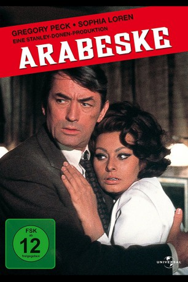

#7197 Arabeske
Alternativ: Arabesque
Auszeichnungen: 1 BAFTA-Awards gewonnen
 
 IMDB-Wertung: 6.6 / 10
IMDB-Wertung: 6.6 / 10  Metascore: 0
Metascore: 0 
Professor Ragheeb will sich beim Augenarzt nur die Sehstärke kontrollieren lassen. In der Praxis ist allerdings nur seine Vertretung, ein Mr. Sloane (John Merivale), der etwas anderes im Sinne hat: Er pustet Ragheeb nicht nur das Augenlicht für immer aus. Denn in seinem Brillenbügel hat der Prof. einen Zettel mit Hieroglyphen stecken, den Sloane im Auftrag seines Arbeitgebers, dem Reeder Beshraavi beschaffen soll. Kurz darauf besucht Sloane einen anderen Professor: David Pollock ist Experte für alte Schriftzeichen und soll das Papier entziffern.
Jahr: 1966
Dauer: 105 Minuten
FSK: 12
Land: USA Studio: A Universal PictureTonspuren:
Untertitel:
Auflösung: 1080p (1920x816) Größe: 7833 MB
Genre: Action, Thriller, Drama, Abenteuer, Krimi, Liebe, Mystery
Regisseur: Stanley Donen
Drehbuch: Julian Mitchell
Soundtrack:
Darsteller:
 Gregory Peck als Prof. David Pollock
Gregory Peck als Prof. David Pollock Sophia Loren als Yasmin Azir
Sophia Loren als Yasmin Azir- Alan Badel als Beshraavi
- Kieron Moore als Yussef Kasim
- Duncan Lamont als Webster
 George Coulouris als Ragheeb
George Coulouris als Ragheeb- Windsor Davies als Policeman in Car Crash , uncredited
 Larry Taylor als Beshraavi's Henchman , uncredited
Larry Taylor als Beshraavi's Henchman , uncredited Carl Duering als Hassan Jena
Carl Duering als Hassan Jena- John Merivale als Maj. Sylvester Pennington Sloane
- Ernest Clark als Beauchamp
- Harold Kasket als Mohammed Lufti
- Lewis Alexander als Racegoer , uncredited
- Michael Bilton als Camera Shop Owner , uncredited
- Ernest Blyth als Man at Gatwick Airport , uncredited
 Jimmy Gardner als Hemsley , uncredited
Jimmy Gardner als Hemsley , uncredited- Gordon Griffin als Fanshaw , uncredited
 Victor Harrington als Racegoer , uncredited
Victor Harrington als Racegoer , uncredited Juba Kennerley als Racegoer , uncredited
Juba Kennerley als Racegoer , uncredited- Aileen Lewis als Racegoer , uncredited
 Harry Locke als Zoo Guard , uncredited
Harry Locke als Zoo Guard , uncredited- Malya Nappi als Ragheeb's Wife , uncredited
- James Payne als Driving the Kidnap Lorry , uncredited
- Robert Rowland als Taxi Driver , uncredited
- Julie Shaw als Fanshaw's girlfriend , uncredited
- John Tatum als Racegoer , uncredited
Datei: X:\1966\Arabeske (1966, FSK12, 1920x816).mkv seit 09.10.2017
Festplatte: HD 1900-1970
 Es gibt insgesamt 27 Filme in der Gruppe '1966'
Es gibt insgesamt 27 Filme in der Gruppe '1966'